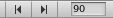

This document is unofficially translated by users.Please see the original document here. 翻訳に関する修正など、ご連絡はこちらまで。 Please send e-mail to here, when you have any question about the translation. |
Using the Animation View
The Animation View can be used to preview and edit Animation Clips for animated Game Objects in Unity. The Animation View can be opened from the menu.
Viewing Animations on a GameObject
The Animation View is tightly integrated with the Hierarchy View, the Scene View, and the Inspector. Like the Inspector, the Animation View will show whatever Game Object is selected. You can select a Game Object to view using the Hierarchy View or the Scene View.
The Animation View shows the Game Object selected in the Hierarchy View.
At the left side of the Animation View is a hierarchical list of the animatable properties of the selected Game Object. The list is ordered by the Components and Materials attached to the Game Object, just like in the Inspector. Components and Materials can be folded and unfolded by clicking the small triangles next to them. If the selected Game Object has any child Game Objects, these will be shown after all of the Components and Materials.
The property list to the left in the Animation View shows the Components and Materials of the selected Game Object, just like the Inspector.
Creating a New Animation Clip
Animated Game Objects in Unity need an Animation Component that controls the animations. If a Game Object doesn't already have an Animation Component, the Animation View can add one for you automatically when creating a new Animation Clip or when entering Animation Mode.
To create a new Animation Clip for the selected Game Object, click the right of the two selection boxes at the upper right of the Animation View and select . You will then be prompted to save an Animation Clip somewhere in your Assets folder. If the Game Object doesn't have an Animation Component already, it will be automatically added at this point. The new Animation Clip will automatically be added to the list of Animations in the Animation Component.
Create a new Animation Clip.
In the Animation View you can always see which Game Object you are animating and which Animation Clip you are editing. There are two selection boxes in the upper left of the Animation View. The left selection box shows the Game Object with the Animation Component attached, and the right selection box shows the Animation Clip you are editing.
The left selection box shows the Game Object with the Animation Component attached, and the right selection box shows the Animation Clip you are editing.
Animating a Game Object
To begin editing an Animation Clip for the selected Game Object, click on the .
This will enter Animation Mode, where changes to the Game Object are stored into the Animation Clip. (If the Game Object doesn't have an Animation Component already, it will be automatically added at this point. If there is not an existing Animation Clip, you will be prompted to save one somewhere in your Assets folder.)
You can stop the Animation Mode at any time by clicking the again. This will revert the Game Object to the state it was in prior to entering the Animation Mode.
You can animate any of the properties shown in the property list of the Animation View. To animate a property, click on the for that property and choose from the menu. You can also select multiple properties and right click on the selection to add curves for all the selected properties at once. (Transform properties are special in that the .x, .y, and .z properties are linked, so that curves are added three at a time.)

Any property can be animated by clicking on its or by right clicking on its name. For Transform properties, curves for , , and are added together.
When in Animation Mode, a red vertical line will show which frame of the Animation Clip is currently previewed. The Inspector and Scene View will show the Game Object at that frame of the Animation Clip. The values of the animated properties at that frame are also shown in a column to the right of the property names.

In Animation Mode a red vertical line shows the currently previewed frame. The animated values at that frame are previewed in the Inspector and Scene View and to the right of the property names in the Animation View.
You can click anywhere on the to preview or modify that frame in the Animation Clip. The numbers in the are shown as seconds and frames, so 1:30 means 1 second and 30 frames.
 You can go directly to a specific frame by typing it in, or use the buttons to go to the previous or next keyframe.
You can also use the following keyboard shortcuts to navigate between frames:
- Press () to go to the previous frame.
- Press () to go to the next frame.
- Hold Alt and press () to go to the previous keyframe.
- Hold Alt and press () to go to the next keyframe.
In Animation Mode you can move, rotate, or scale the Game Object in the Scene View. This will automatically create Animation Curves for the position, rotation, and scale properties of the Animation Clip if they didn't already exist, and keys on those Animation Curves will automatically be created at the currently previewed frame to store the respective values you changed.
You can also use the Inspector to modify any of the animatable properties of the Game Object. This too will create Animation Curves as needed, and create keys on those Animation Curves at the currently previewed frame to store your changed values. Properties that are not animatable are grayed out in the Inspector while in Animation Mode.
You can also manually create a keyframe using the . This will create a key for all the curves that are currently shown in the Animation View. If you want to only show curves for a subset of the properties in the property list, you can select those properties. This is useful for selectively adding keys to specific properties only.
When selecting a property in the property list, only the curve for that property is shown.
Playback
The Animation Clip can be played back at anytime by clicking the in the Animation View.
The playback will loop within the time range that is shown in the . This makes it possible to focus on refining a small part of the Animation Clip that is being worked on, without having to play back the entire length of the clip. To play back the whole length of the Animation Clip, zoom out to view the entire time range, or press to Frame Select with no keys selected. To learn more about navigating the , see the section on Editing Animation Curves.
Page last updated: 2009-11-04